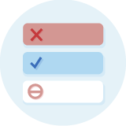

The Security, Suitability, and Credentialing Performance Accountability Council is the interagency government organization accountable to the President for achieving the goals of personnel vetting reform across the Executive Branch
Background
Explains the fundamentals of the government’s vetting and provides an overview of the PAC’s role in driving reform.
Learn morePerformance Metrics
Highlights some performance measures of personnel vetting programs, policies, and processes.
Learn more

Reform Initiatives
Updates the government’s progress towards meeting key personnel vetting reform initiatives.
Learn more